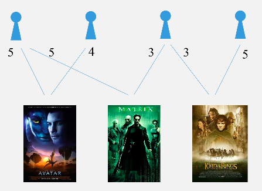
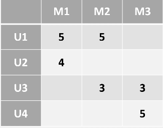
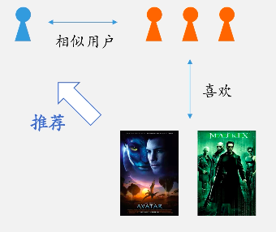
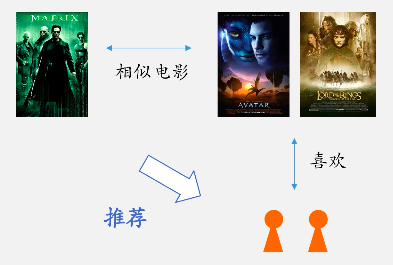
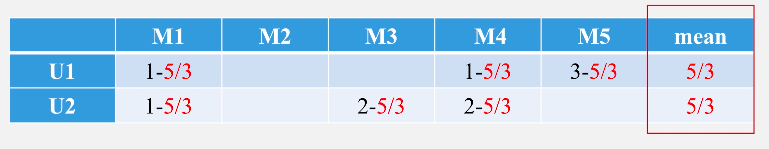
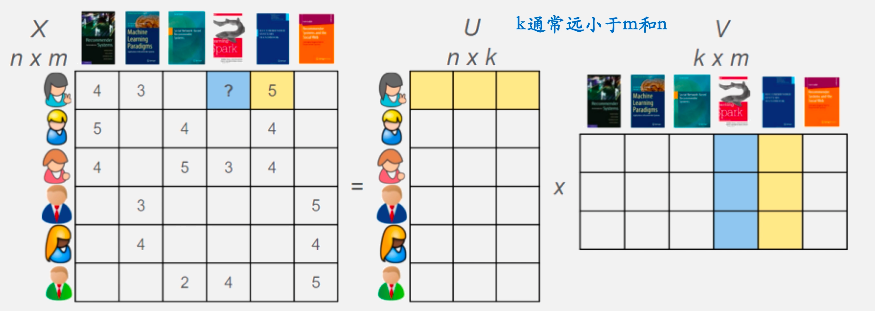
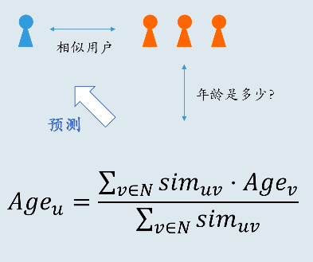

除了社交网络这一常见的网络类型外, 二分网络也是一种经常出现的网络. 所谓二分网络, 即节点被分为了两大类, 其中的边总是存在于一类节点到另一类节点之间. 例如用户与商品的二分网络, 投资者与股票的二分网络等.
特别是用户与商品构成的商品偏好网络, 有着很大的研究价值, 对于构建推荐系统来说必不可少的. 推荐系统一般考虑的是, 想什么样的用户推荐什么样的商品, 会使得用户喜欢, 点击率更高一些. 比如豆瓣电影, 每部电影下, 有用户对该电影的评分, 评分的由高到低, 表示了用户对其的喜欢与不喜欢.
这样, 用户对产品的评分, 或者是否购买某产品, 构成了一个二分网络. 仍然以豆瓣电影为例, 一个简单的二分网络如下图:

对于该网络, 以矩阵来表示为:

其中每个格点的值, 表示该用户对该电影的评分. 接下来, 就以推荐这一应用为目的, 来介绍与二分网络相关的一些方法.
基于内容
其实基于内容进行推荐的方法, 并没有充分利用到二分网络的特点, 在这里进行简要介绍.
基于内容的推荐, 核心的步骤为3个:
- 构建商品的特征向量.
- 构建用户的特征向量.
- 计算商品-用户的相似性.
对于特征向量的构造, 没有固定的方法, 根据实际情况可以很简单, 也可以很复杂.
对于相似性评估指标, 一般来说余弦相似度就是不错的相似度评估指标(遇事不决选余弦).
基于内容进行推荐有着如下的优缺点:
- 优点:
- 可以应用到一个新商品上.
- 不会倾向于流行商品.
- 如果特征向量构建解释性强, 则最终推荐结果解释性强.
- 缺点:
- 有时候构建有效特征比较困难.
- 推荐范围可能比较狭窄.
- 对新用户无效.
- 没有充分利用到二分网络的整体结构信息.
协同过滤
在推荐领域, 协同过滤是一种有效的方法, 分为基于用户与基于物品的协同过滤. 之所以叫做协同过滤, 指的是利用其他的用户或者商品一起, 过滤出值得推荐的商品.
基于用户的协同过滤.
基于用户进行协同过滤, 基本思想是首先根据二分网络, 找到与目标用户相似的那些用户, 然后再根据相似的用户会喜欢哪些商品, 推荐给目标用户.

基于物品的协同过滤.
基于物品进行协同过滤, 基本思想是首先根据二分网络, 找到与目标用户所喜欢的商品相似的商品, 然后将这些商品推荐给用户.

相似性计算.
用户与物品的相似性计算是类似的, 将每个用户对每个物品的打分(没有记录则为空)整理为一个矩阵. 每个用户的向量可以使用对物品的打分构成; 每个物品的向量可以用各个用户对它的打分构成. 向量中的空值可以用0来填充.
得到向量后, 相似性就可以利用余弦相似度$Cosine_Similarity=\frac{AB}{|A||B|}$进行计算了.
然而这里存在的一个问题是, 对于用户没有评分的物品, 其实有两种可能:
用户还没接触过.
用户提前知道自己不喜欢该物品, 不参与打分.
因此直接使用0来进行填充, 是不太好的. 一种更好的方法是, 是计算出用户对每个物品打分的平均值, 再将用户对物品的打分基础上减去这个平均值.

进行这样的处理后, 0可以视作用户对物品的一个平均评分, 比之前的情形要好一些.
使用协同过滤, 有如下优缺点:
优点:
- 不需要去精心设计物品与用户的特征向量, 只要有二分网络即可.
- 在有一定数据积累的情况下, 效果一般比基于内容的方法好.
缺点:
- 冷启动问题, 无论是对新用户, 还是新物品都难以进行推荐.
- 倾向推荐比较流行的商品.
- 如果二分网络对应的矩阵非常稀疏, 那么效果将会不好.
矩阵分解
我们知道对称方阵$A$, 可以用下式的特征分解表示:
其中$W$为酉矩阵, $\Sigma$为对角矩阵, 对角值为特征值.
那么对于任意的距阵$A_{m\times n}$, 可以进行类似的分解吗? 也是可以的:
这样的分解称为奇异值分解(SVD), 其中, $U$是$m\times m$的酉矩阵, $V$是$n\times n$的酉矩阵, $\Sigma$是$m\times n$的矩阵, 除了主对角线外的元素都是0, 主对角线上的每个元素称为奇异值.
这里暂且不细说矩阵分解的具体过程, 可以采用解析的方式, 也可以采用迭代的方式.
当使用奇异值分解后, 在奇异值矩阵中也是按照从大到小排列, 而且奇异值的减小特别快, 在很多情况下, 前10%甚至1%的奇异值就占了全部奇异值之和的99%以上的比例. 也就是说, 可以用最大的$k$个奇异值和对应的左右奇异向量来近似描述矩阵:
如果在原矩阵中, 一些格点上存在缺失, 经过改动的矩阵分解方法, 可以在进行分解时只考虑非缺失部分. 当得到分解后的矩阵后, 可以对原本缺失的格点进行预测.
将其运用到二分网络, 商品推荐中, 如下图:

可以对每个物品, 每个用户, 得到他们对应的$k$维特征向量, 要计算某个用户对某个物品的打分或者评价, 最简单的方法就是将两者的特征向量点乘.
对于SVD, 以及改进的方法SVD++, 在推荐系统中的效果是很好的, 相比协同过滤, 在面对稀疏数据的时候, 可以有更好的表现.
信息推测
在上面协同过滤的方法中, 可以知道某个用户与哪些用户更加相似, 那么利用这个相似度, 可以做更多的事情, 比如可以用于推测用户的信息.

同样, 由矩阵分解得到的特征, 也能够用来做类似的事情, 例如利用特征与某用户信息的标签(如年龄), 构建模型进行预测, 通常会取得不错的效果.
Surprise
Surprise是Python下一个推荐系统库.
使用方式与scikit包相似.
1 | from surprise import SVD |
1 | Evaluating RMSE, MAE of algorithm SVD on 5 split(s). |
其中包含了一些主流的应用于二分网络的推荐算法, 包括协同过滤, SVD等.
| Movielens 100k | RMSE | MAE | Time |
|---|---|---|---|
| SVD | 0.934 | 0.737 | 0:00:11 |
| SVD++ | 0.92 | 0.722 | 0:09:03 |
| NMF | 0.963 | 0.758 | 0:00:15 |
| Slope One | 0.946 | 0.743 | 0:00:08 |
| k-NN | 0.98 | 0.774 | 0:00:10 |
| Centered k-NN | 0.951 | 0.749 | 0:00:10 |
| k-NN Baseline | 0.931 | 0.733 | 0:00:12 |
| Co-Clustering | 0.963 | 0.753 | 0:00:03 |
| Baseline | 0.944 | 0.748 | 0:00:01 |
| Random | 1.514 | 1.215 | 0:00:01 |